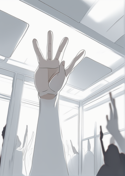

When Sky wakes up one morning, he senses an unusual feeling as if he's missing something important. He becomes convinced that there's another presence in the house, besides himself. Having an unexplainable feeling, he asks in his friend Jack, to share his thoughts about it.
As they discuss the matter, together they make an interesting discovery in their phone contacts - there are unknown numbers saved in their phones. Intrigued by the possibility that these contacts might be related to the each other, Sky and Jack decide to compare their phone contacts. During their comparison, they notice that some of the unknown contacts match, but neither of them can recall who these individuals are.
Not knowing what could the unknown contacts mean, to make sense of this puzzling situation, Sky and Jack agree to label these unidentified contacts as the person who "disappeared.". With the hope of trying to understand the situation, the two friends decides to uncover the mystery surrounding it.